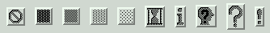

Для опций bitmap в виджетах гарантируется наличие следующих битовых изображений:

На графике выше показаны виджеты Button, отмеченные стандартными битовыми изображениями. Слева направо они представлены как 'error', 'gray75', 'gray50', 'gray25', 'gray12', 'hourglass', 'info', 'questhead', 'question' и 'warning'.
Вы также можете использовать собственные битовые изображения. Любой файл в формате .xbm (X bit map) будет работать. Вместо стандартного имени битового изображения используйте строку '@', за которой следует путь к файлу .xbm.